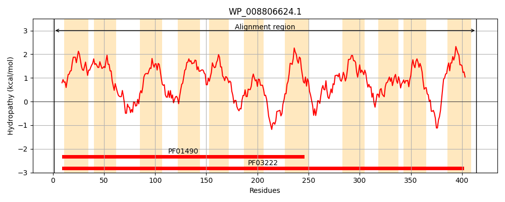
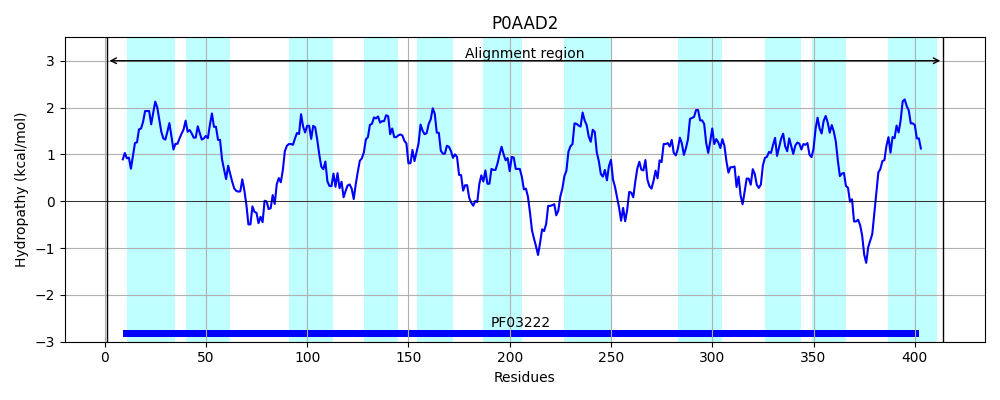
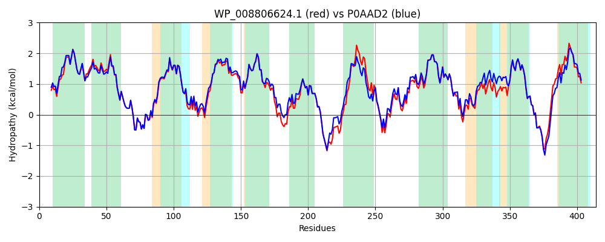

Hit Accession: P0AAD2
Hit TCID: 2.A.42.1.2
Hit Description: gnl|BL_ORD_ID|8654 gnl|TC-DB|P0AAD2|2.A.42.1.2 Tryptophan-specific transport protein - Escherichia coli.
Mach Len: 414
e:0.000000
Query TMS Count : 11
Hit TMS Count: 11
TMS-Overlap Score: 11.150000
Predicted Substrates:CHEBI:9769;tryptophan, CHEBI:5900;1H-indole
BLAST Alignment:
Score: 1958 , Bit scores: 758 bits, E-value: 0.0e+00, Alignment length: 414, Percentage identity: 90
Query: 1 MATLTTTTTRPSLFGGVVIIGGTIIGAGMFSLPVVMSGAWFFWSLAALVFTWFCMLHSGLMILEANLNYRIGSSFDTITKDLLGKGWNLVNGVSIAFVLYILTYAYISASGSILHHTFSEMSLNVPARAAGFGFALLVAFIVWMSTKAVSRMTAIVLGAKVITFFLTFGSLLGHVEPTTLFNVAEKNASYAPYLLMTLPFCLASFGYHGNVPSLMKYYGKDPRTITRCLIYGTLLALGLYVVWLLVTMGNIPRPQFIDIAQKGGNIDVLVQALSGVLNNRGLDLLLVVFSNFAVASSFLGVTLGLFDYLADLFGFDDSAMGRFKTALLTFIPPMIGGLVKPDGFLYAIGYAGLAATVWAAIVPALLARASRKRFGSPQFRVWGGKAMIVLILLFGLGNAVVHFLSSFNLLPVYQ 414
MATLTTT T PSL GGVVIIGGTIIGAGMFSLPVVMSGAWFFWS+AAL+FTWFCMLHSGLMILEANLNYRIGSSFDTITKDLLGKGWN+VNG+SIAFVLYILTYAYISASGSILHHTF+EMSLNVPARAAGFGFALLVAF+VW+STKAVSRMTAIVLGAKVITFFLTFGSLLGHV+P TLFNVAE NASYAPYLLMTLPFCLASFGYHGNVPSLMKYYGKDP+TI +CL+YGTL+AL LY +WLL TMGNIPRP+FI IA+KGGNIDVLVQALSGVLN+R LDLLLVVFSNFAVASSFLGVTLGLFDYLADLFGFDDSA+GR KTALLTF PP++GGL+ P+GFLYAIGYAGLAAT+WAAIVPALLARASRKRFGSP+FRVWGGK MI LIL+FG+GNA+VH LSSFNLLPVYQ
Sbjct: 1 MATLTTTQTSPSLLGGVVIIGGTIIGAGMFSLPVVMSGAWFFWSMAALIFTWFCMLHSGLMILEANLNYRIGSSFDTITKDLLGKGWNVVNGISIAFVLYILTYAYISASGSILHHTFAEMSLNVPARAAGFGFALLVAFVVWLSTKAVSRMTAIVLGAKVITFFLTFGSLLGHVQPATLFNVAESNASYAPYLLMTLPFCLASFGYHGNVPSLMKYYGKDPKTIVKCLVYGTLMALALYTIWLLATMGNIPRPEFIGIAEKGGNIDVLVQALSGVLNSRSLDLLLVVFSNFAVASSFLGVTLGLFDYLADLFGFDDSAVGRLKTALLTFAPPVVGGLLFPNGFLYAIGYAGLAATIWAAIVPALLARASRKRFGSPKFRVWGGKPMIALILVFGVGNALVHILSSFNLLPVYQ 414 | Protein Hydropathy Plots: |
|---|
|  |  |
Pairwise Alignment-Hydropathy Plot:
|
|---|
|  |